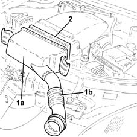
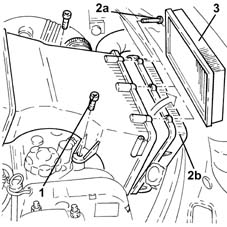
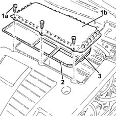

1048A14 air cleaner filtering element - replace.
- Path
- Procedures > 10 ENGINE > 1048 ENGINE AIR SUPPLY CIRCUIT > 1048A vacuum air circuit > 1048A14 air cleaner filtering element - replace.
- Kind
- repair procedure (removal / refitting; the operation number is the code)
- Applies to
- all engines; all production periods
- Interactive page
- https://sloeber94.github.io/elrnDB-lYpsln/en/#/2428916
Applies to: engines: 1.2 8v; all production periods
 Removing
Removing
 Refitting
Refitting1. Release the side fastenings and remove the air filter cover (1a) with cold air intake (1b).
2. Remove the air filter filter element.

Applies to: engines: 1.2 16v; all production periods
Removing
Refitting1. Undo the bolts fixing the air filter assembly.
2. Undo the bolts (2a) and remove the air filter cover (2b).
3. Remove the air filter filter element.

Applies to: engines: 1.4 16v; all production periods
Removing
Refitting1. Undo the bolts fixing the air filter assembly.
2. Undo the bolts (2a) and remove the air filter cover (2b).
3. Remove the air filter filter element.
Applies to: engines: 1.3 JTD; all production periods
Removing
Refitting1. Undo the bolts (1a) and remove the air filter cover (1b).
2. Remove the gasket.
3. Remove the air filter filter element.

Applies to: engines: 1.2 8v; all production periods
Refitting
Removing.
Fit a new filter element in its seating.
Refit the air filter cover with cold air intake and secure with the side fastenings.
Applies to: engines: 1.2 16v; all production periods
Refitting
Removing.
Place a new filter element for the air filter back in the housing.
Close the air filter cover and fix it using the bolts.
Tighten the air filter bolts.
Applies to: engines: 1.4 16v; all production periods
Refitting
Removing.
Place a new filter element for the air filter back in the housing.
Close the air filter cover and fix it using the bolts.
Tighten the air filter bolts.
Applies to: engines: 1.3 JTD; all production periods
Refitting
Removing.
Place a new filter element for the air filter back in the housing.
Place the gasket back in its housing.
Place the air filter cover back in its housing and fix it using the bolts.
Topics that link to this page (8)
- B10 ENGINE DOES NOT START / UNDER NO CIRCUMSTANCES
- X01 EXCESSIVE FUEL CONSUMPTION
- 0010K30 30,000km service coupon, emission control versions
- 0010K60 60,000km service coupon - emission control versions
- 0010K90 90,000km service coupon - emission control versions
- 0010M20 120,000km service coupon, emission control versions
- 0010M50 150,000km service coupon - emission control versions
- 0010M80 180,000km service coupon - emission control versions